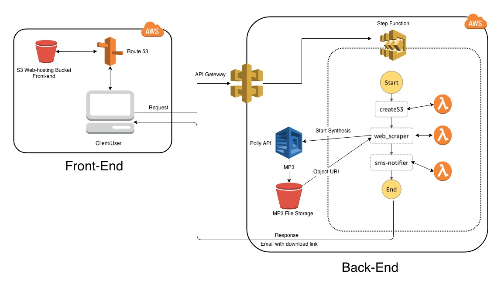

Lisingo is a surprisingly simple design that we believe is an elegant solution to a common problem. It starts by the user entering a URL into our search bar. From there our product scrapes the given web page for relevent text, making sure to leave out all tables of content, foot notes, ads, and anything that is not essential text. From there, we utilize Amazon Web Services Polly API to translate that text into an mp3 file. Once the mp3 file is ready, we send it to an AWS Simple Storage Solution (S3) Bucket where it is stored. A link to this S3 bucket is then delivered to the user, where then can then download the corresponding mp3.
To achieve this, we use a pipeline of Amazon Web Services mostly written in Python using the Boto3 SDK. Our web-client is written using HTML5, CSS3, and JavaScript. When a URL is entered into the search bar, the client kicks off the back-end pipeline. The URL, along with an email and phone number, is then passed to an AWS API Gateway and kicks off our Step Function state machine. This state machine is comprised of three AWS Serverless Lambda functions.
The frist Lambda function creates an S3 bucket using the email address provided. It also uploads all necessary permissions configurations to the bucket. The second lambda scrapes the webpage for relevant text using the BeautifulSoup Python library. From there, it makes a AWS Polly API call, sending the aquired text to be conveted into an MP3 audio file which is automatically stored in the S3 bucket created by the first lambda function. The third and final lambda function sends an email and text message to the user, letting them know that their data is ready. Both the text message and the email contain a download link for the MP3 file.
